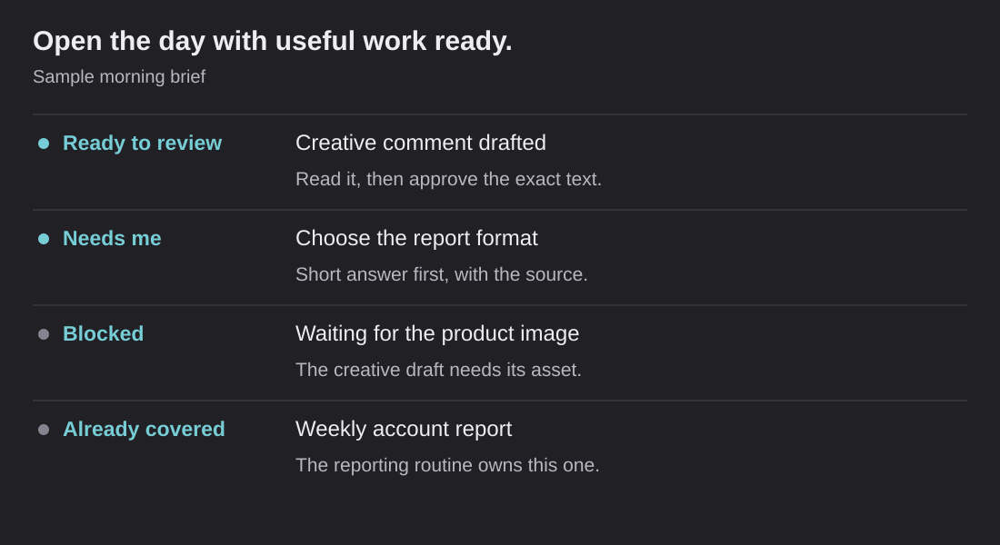

Start the day with useful drafts ready
AI prepares drafts and research, then puts what needs me into a short morning brief.

I want AI to help with the work before I sit down to do it. A list of tasks is a start, but it still leaves me asking where to begin. The day-ahead planning work prepares the actual draft, the needed research or the decision I have to make.
The output is one short brief I can read on my phone. It tells me what is ready, what needs me, what is blocked and what another routine already covers.
Keep the brief about the near-term work
It looks at tasks due today, tomorrow or one or two business days ago. Older and undated backlog items are outside the routine. That choice is deliberate. An old task can remain important without needing to bury every morning's brief.
Business days matter too. On a Monday, a Friday task should not disappear just because a weekend passed. The rule needs to match the way people work, not the simplest date calculation.
Give each task one clear place
The planning process checks whether another routine already owns the deliverable, then whether it is blocked, then whether a useful draft can be prepared or a decision is needed.
Scroll sideways to see all columns.
| Task group | What the brief gives me |
|---|---|
| Ready to review | The actual draft, a numbered item and what approval would do |
| Needs me | One specific question and a recommendation |
| Blocked | The person, permission or source we are waiting for |
| Already covered | The routine that owns the task, without duplicating its work |
The main section is capped at five items. More tasks can be named without turning the brief into a wall of unfinished work.
Prepare the deliverable, not advice to prepare it
For a review task, the useful output is the comment I could paste. For a build task, it is a concrete plan and the first step. For a reply, it is the draft response. For an account action, it is a proposed change with its evidence and scope.
Research follows the task. Read the task's own context first, then the sources needed to answer it. Do not read every connector just because it is available. If a source cannot be reached, say so and defer the part that depends on it.
The brain and operating rules help with past decisions and writing preferences. Current account numbers still need their own current source.
A fictional morning brief
The public example has a draft creative comment, a reporting-format decision, a task waiting for assets and a weekly report already owned by another routine. It includes a numbered approval example so a reviewer can see what “ready” actually means.
Read the sample morning brief.
The example uses sample tasks to show the format while keeping actual client and team work private.
Make approval specific
The design lets me approve individual item numbers instead of giving an open-ended “go ahead.” A changed draft needs its changed scope reviewed. Unapproved work stays unapproved.
That is useful even outside automation. It makes the prepared work concrete: here is the text, here are the sources, here is the intended destination and here is what the next action would do. The brief can then report what actually happened rather than what it intended to do.
The workflow prepares the work and keeps approval specific. It supports both connected actions and manual handoffs, so a useful draft stays useful whichever tool owns the final step.
My contribution
I defined the scope, the task window, the four task groups and the approval behavior. I designed around how I actually use overdue tasks and how I read a morning brief. I worked with AI on the research and drafting process and the templates and tools that support it.
I want to open the brief and have something useful ready: a draft to review, a decision to make or a clear reason a task is waiting.